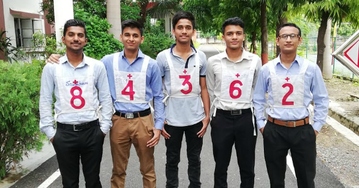

Indian Army is the elite organisation that is serving this country since independence and proved his worth always at the time of emergencies war or other Humatarian crisis and it is our honour and duty to serve the humanity and save guard the indian borders indeed Indian Army is divided further in fighting arms and support arms thus the list of regiments are mentioned below Jai Hind!
| Infantry of Indian Army | The corps of Engineers |
| The Armoured Corps | Army ordnance Corps |
| mechanized Infantry | Army medical Corps |
| Know more... | Know more |
The life of a young officer in the Indian Army is tough. They are often posted in remote and difficult areas, where they must live in harsh conditions and face challenging circumstances. They are responsible for leading a platoon of soldiers, ensuring that their troops are well-trained, well-fed, and well-equipped, and that they are ready to defend the country at a moment's notice.
The life of a young officer in the Indian Army is both challenging and rewarding. As soon as they are commissioned, they are assigned to their unit and sent to the front lines to defend the country’s borders. They are responsible for leading a platoon of soldiers, ensuring that their troops are well-trained, well-equipped, and ready to defend the country at a moment’s notice.
Young officers in the Indian Army are required to undergo rigorous training at the National Defence Academy (NDA), IMA and OTA before they can be commissioned. The training is designed to prepare them for the demands of military life, including learning about weapons and tactics, as well as developing leadership skills. The training is physically and mentally challenging, and only those who are truly dedicated to serving their country are able to complete it successfully.
1.Wake up at 4.................................................................
2.Basic Activity 4 AM TO 5 AM..................................................
3.On ground 5:30 AM............................................................
4.Pt||running 5:30 AM to 7:00 AM...............................................
5.Breakfast 7:00 AM to 8:00 AM.................................................
6.Office hours 8:00 AM to 2:00 AM..............................................
7.Lunch 2:00 PM to 2:30 PM.....................................................
8.Playground 4:00 PM to 5:30 PM................................................
9.Fresh 5:30 PM to 8:00 PM.....................................................
10.Dinner 8:00 PM to 7:00 PM...................................................
11.Sleep 10:00 PM..............................................................
HOW TO JOIN INDIAN ARMY

Ways to Join Indian Army
| To learn More | |
|---|---|
| NDA Entry | Know more... |
| 10+2 TES Entry | Know more... |
| CDS Entry | Know more... |
| TGC Entry | Know more... |
| SSC(Tech) Entry | Know more... |
| NCC Entry | Know more... |
| ACC Entry | Know more... |
| Territorial Army | Know more... |
| PC(SL) Entry | Know more... |
| SCO Entry | Know more... |
This was a Landing page Demo Created by SAYYED AMAN MANSOOR as an intern for ZIC LABS I hope you like this(task-1completed)